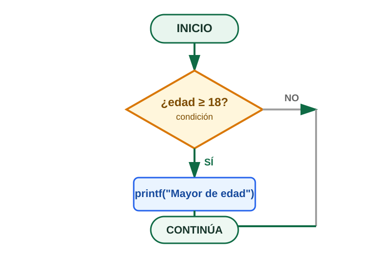
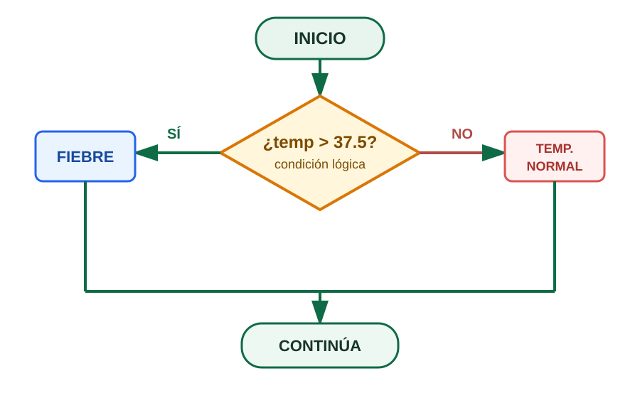
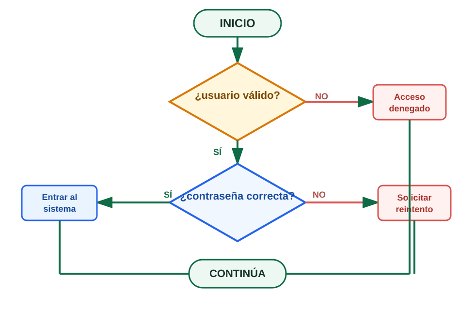
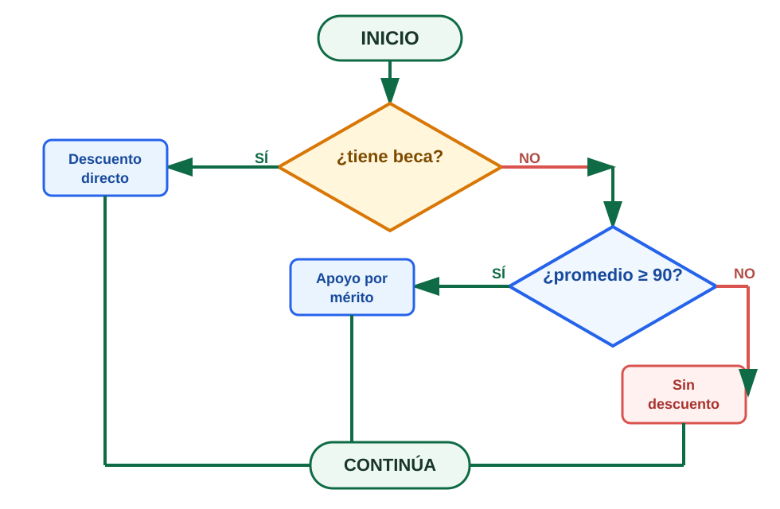
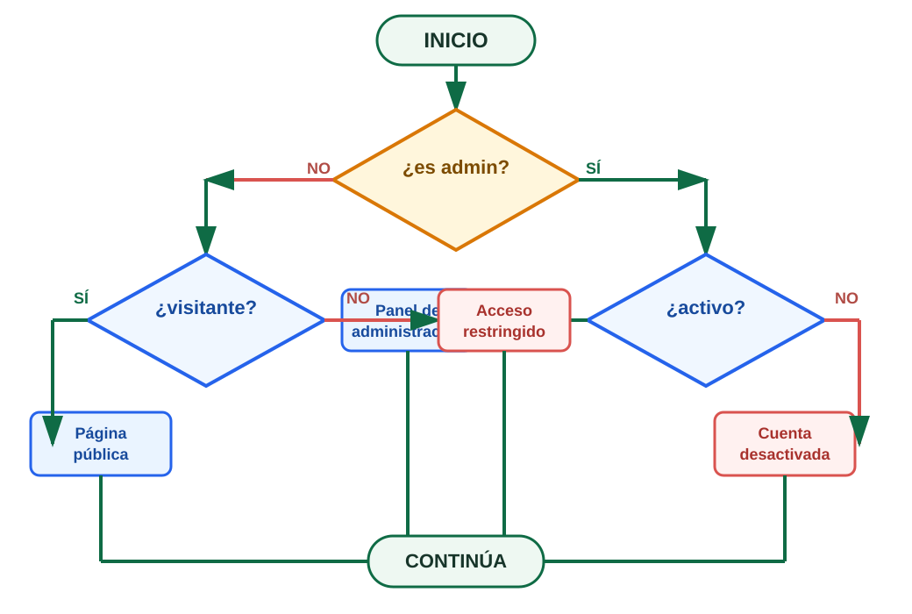
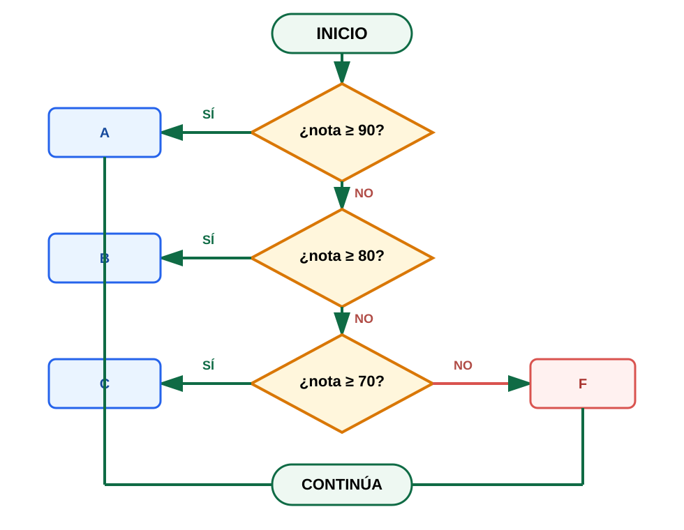
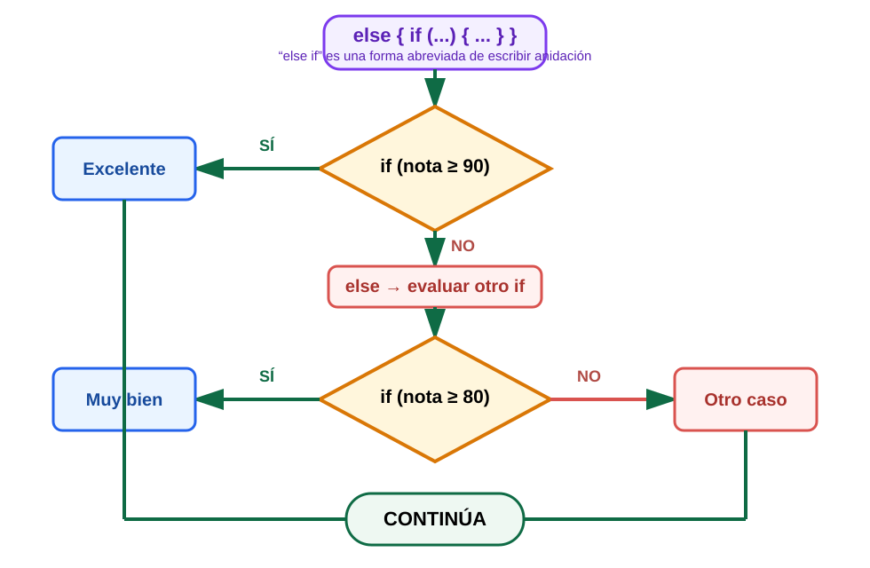
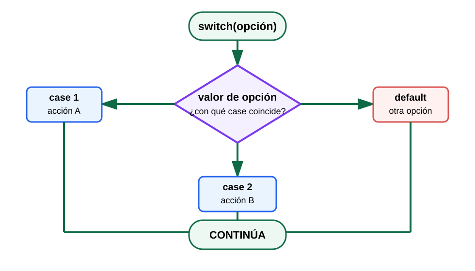

switch.¿Qué es una estructura de selección?
Permite que el programa tome una decisión a partir del resultado de una condición lógica.
edad, nota, opción...
¿verdadero o falso?
ejecutar una alternativa
Analogía cotidiana
“Si llueve, llevo paraguas; si no, uso lentes de sol.”
La condición divide el problema en caminos posibles. El programa solo sigue el camino correspondiente.
if · FORMA SIMPLELa forma simple ejecuta un bloque solo si la condición es verdadera. Si es falsa, el bloque se omite y el programa continúa.
#include <stdio.h> int main() { int edad; printf("Ingresa tu edad: "); scanf("%d", &edad); if (edad >= 18) { printf("Eres mayor de edad.\n"); } printf("Fin del programa.\n"); return 0; }
{ }, incluso cuando el bloque tenga una sola instrucción.
if-else
Se utiliza cuando el problema tiene dos alternativas mutuamente excluyentes. Esta es la forma compuesta de la selección.
if (temperatura > 37.5) { printf("Tienes fiebre.\n"); } else { printf("Tu temperatura es normal.\n"); }
VALIDAR
Entradas y rangos.
DECIDIR
Aprobado / reprobado.
RESPONDER
Mostrar mensajes distintos.
Anidada por verdadero
La segunda condición se evalúa solo cuando la primera fue verdadera.
Anidada por falso
La segunda decisión se coloca dentro de la rama else.
Anidada falso / verdadero
Puede haber decisiones internas en ambas ramas.
En cascada
Serie de decisiones enlazadas para clasificar varios casos.
✅ Anidada por verdadero
if (usuarioValido) { if (passwordCorrecto) { printf("Entrar al sistema\n"); } else { printf("Solicitar reintento\n"); } } else { printf("Acceso denegado\n"); }


✅ Anidada por falso
if (tieneBeca) { printf("Aplicar descuento directo\n"); } else { if (promedio >= 90) { printf("Aplicar apoyo por mérito\n"); } else { printf("Sin descuento\n"); } }
✅ Anidada por falso / verdadero
if (esAdmin) { if (activo) { printf("Panel de administración\n"); } else { printf("Cuenta desactivada\n"); } } else { if (visitante) { printf("Página pública\n"); } else { printf("Acceso restringido\n"); } }

if.
✅ Anidación en cascada
if (nota >= 90) { printf("A\n"); } else { if (nota >= 80) { printf("B\n"); } else { if (nota >= 70) { printf("C\n"); } else { printf("F\n"); } } }
if-else if-elseelse if. Lo que realmente existe es else seguido de otro if. Es una forma práctica de escribir anidación para simular una selección múltiple.else if (condición) equivale conceptualmente a else { if (condición) { ... } }.Se usa mucho por comodidad y legibilidad, pero no debe confundirse con una estructura nueva del lenguaje. Cuando la cadena crece demasiado, en buenas prácticas suele recomendarse evitar abusar de ella.
if (calificacion == 'A') { printf("Excelente trabajo.\n"); } else if (calificacion == 'B') { printf("Muy bien.\n"); } else if (calificacion == 'C') { printf("Suficiente.\n"); } else { printf("Calificación inválida.\n"); }
switch será más claro.
Ventaja
Permite evaluar rangos y expresiones lógicas.
Riesgo
Abusar de la cadena puede volver el código largo y difícil de mantener.
Recomendación
Para muchos valores constantes, suele convenir switch.
switch
switch es apropiado cuando una expresión se compara contra varios valores constantes. En muchos escenarios reemplaza mejor a largas cadenas de else if.
switch (expresion_entera) { case valor1: // instrucciones break; case valor2: // instrucciones break; default: // opción no contemplada }
case 1:✅ Constante entera
case 'A':✅ Carácter constante
case 100+50:✅ Expresión constante
case x:❌ Variable: no válido
break Y FALL-THROUGH⚠️ Sin break
int dia = 2; switch (dia) { case 1: printf("Lunes\n"); break; case 2: printf("Martes\n"); case 3: printf("Miércoles\n"); break; }
✅ Fall-through intencional
switch (opcion) { case 'a': case 'A': printf("Opción A seleccionada.\n"); break; }
defaultint opcion; printf("Menú: 1=Sumar, 2=Restar, 3=Salir\n"); scanf("%d", &opcion); switch (opcion) { case 1: // sumar break; case 2: // restar break; case 3: printf("Saliendo...\n"); break; default: printf("Opción no válida.\n"); }
default crea una salida segura para valores inesperados.if, ANIDACIÓN Y switch?| Situación | Conviene | Razón |
|---|---|---|
| Condición única simple | if | Es la forma base de selección simple. |
| Dos caminos excluyentes | if-else | Representa la forma compuesta. |
| Necesitas decidir paso a paso | Anidación | Direcciona el flujo con decisiones encadenadas. |
| Rangos o expresiones lógicas | if / anidación | Permite relaciones y condiciones complejas. |
| Muchos valores constantes discretos | switch | Puede ser más claro que largas cadenas “else if”. |
Prueba una condición
Consola
else if es una estructura nueva e independiente?
case continúe ejecutando el siguiente?
En selección, la base real en C es simple y compuesta. La anidación surge de combinar esas decisiones para direccionar el flujo. La escritura
else if no es una estructura especial del lenguaje: es una forma práctica de expresar anidación. Para muchos valores constantes, switch suele ser una alternativa más clara.“Escribir un
if es fácil. Diseñar correctamente el camino lógico del programa mediante anidación, prioridades y claridad… eso es programación estructurada.”— Prof. Pedro Núñez Yepiz